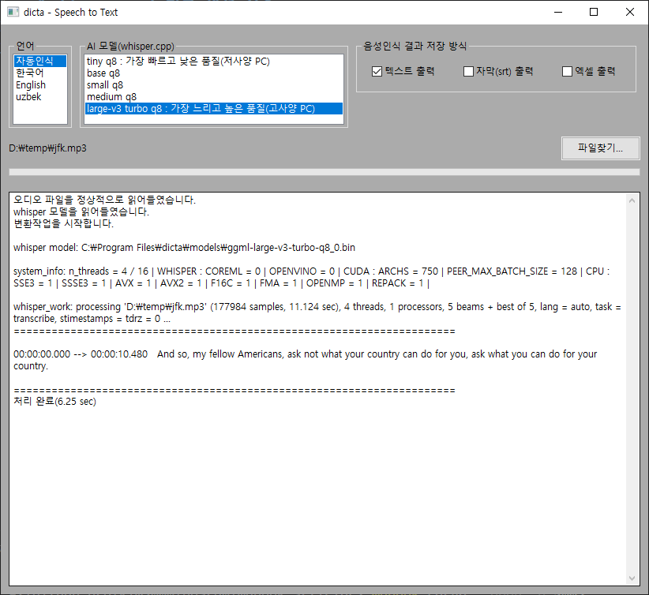
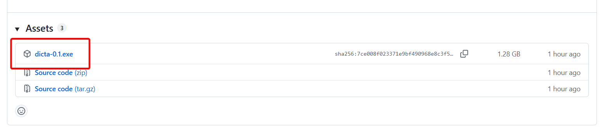
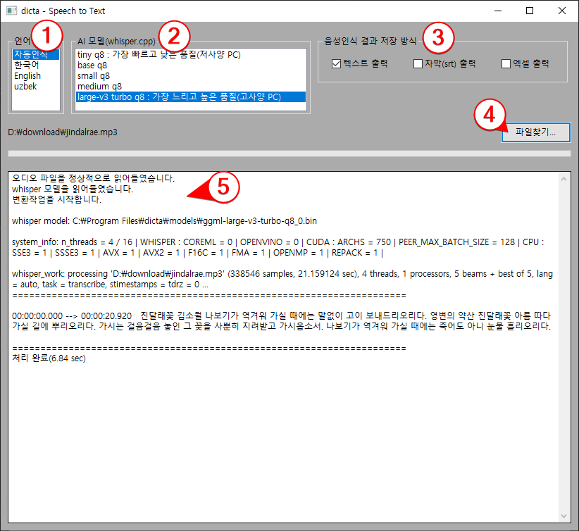

whisper 녹취록 생성 실습
whisper 모델
chatGPT를 만든 OpenAI에서 만든 STT(Speech To Text) 모델로, 회의 녹음 mp3 파일을 받아쓰기 한 것처럼 문자열로 바꿔준다.
주로 회의 녹음 파일을 이용해 자동으로 녹취록을 만들 때나 동영상에서 자막 파일을 만들 때 사용한다.
스마트폰의 chatGPT 앱에서 사용자의 음성을 알아듣고 문자열로 바꿔 chaGPT에게 넘겨줄 떄도 이 whisper 모델이 사용되고 있다.

1. 녹취 프로그램 설치
녹취 프로그램 다운로드

위 파일을 다운로드받아 설치한다.
2. 샘플 파일 다운로드
3. 음성을 문자로 변환하는 STT 실습

- 언어를 선택한다(기본값: 자동 인식)
- AI 모델 선택(기본값: Large-v3 turbo q8)
- 음성인식 결과 저장 방식 선택(기본값: 텍스트 출력)
- "파일 찾기" 버튼을 눌러 mp3 파일을 선택한다.
- 잠시 후 결과를 확인한다.